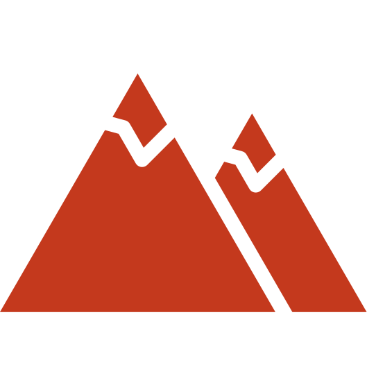
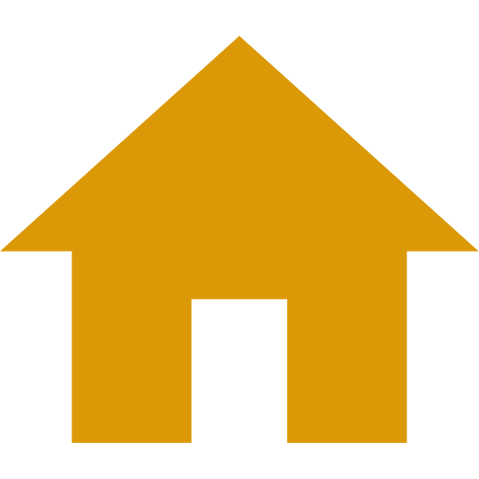
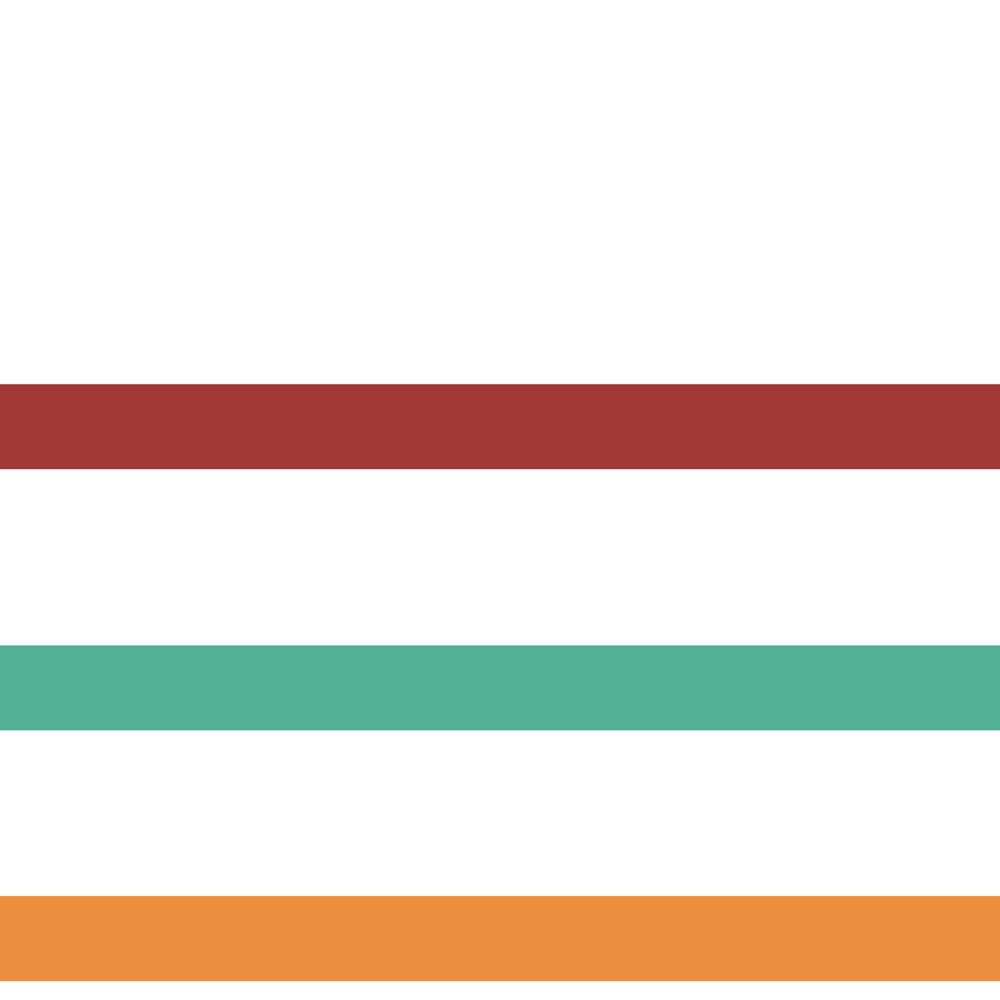

Cette carte interactive te permet de t'orienter sur le site UNESCO Pyrénées-Mont Perdu.
| Légende : | Point de départ |
|  Point de géographie | |
|  Village | |
|  Randonnées (dif. niveaux) | |
| Tourisme : |
Patrimoine UNESCO Vallées de Gavarnies Randonnées supplémentaires |
| Randonnées : |
Gavarnie - Cirque de Gavarnie (balade familiale) Pineta - Cascada del Cinca (marche d'une journée) Refugio de Goriz - Gavarnie (trek de plusieurs jours) |
2023 © slackcartography